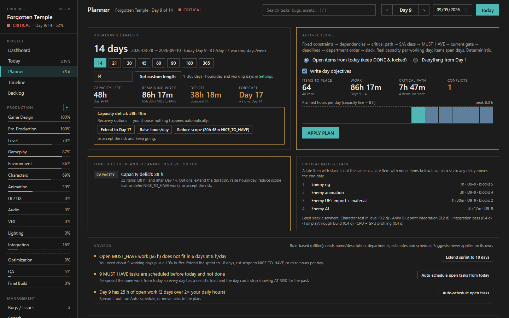
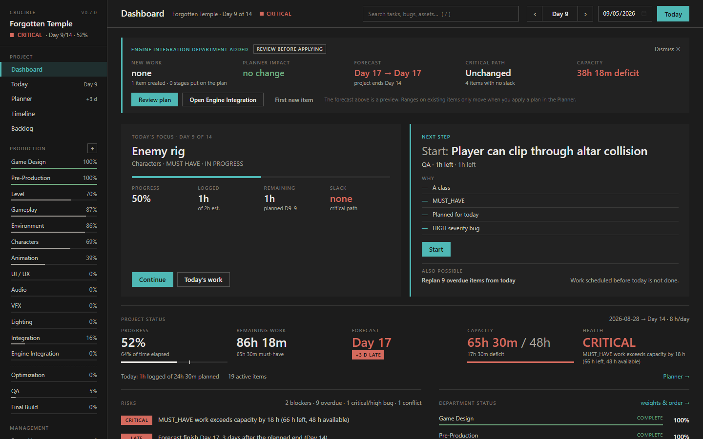
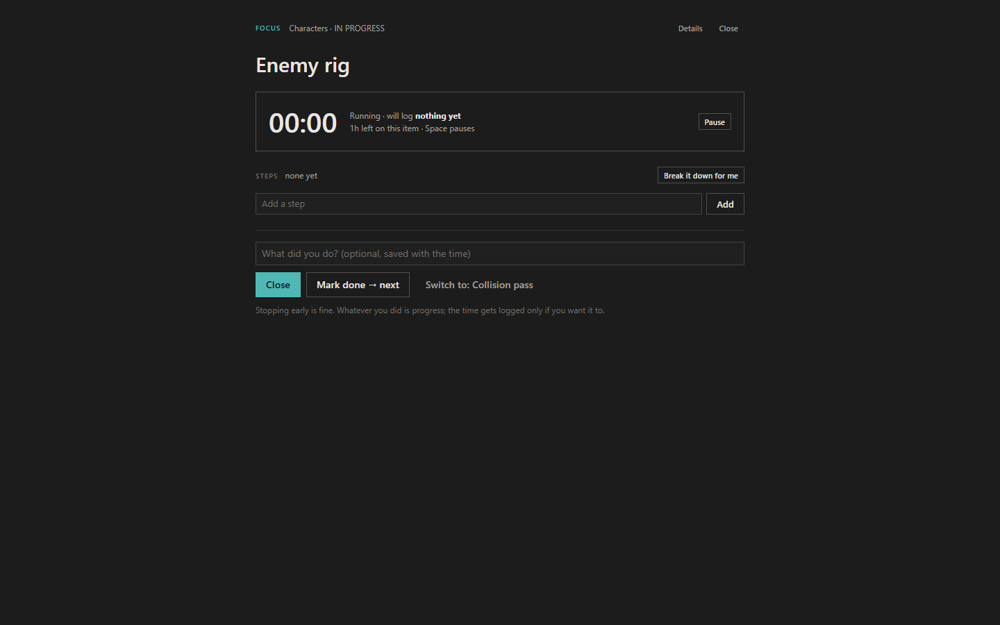

Production tracking for people who make things.
On your PC, in your files, no account. Departments with pipelines, assets with stages, bugs where they belong, and a planner that tells the truth.
Download for Windows — free Read the user manual
Why it exists
Studios plan production with tools that cost more per seat than most indies earn per month, and that stop working the moment the internet does. Crucible is the tracker one production artist wanted for their own projects: departments with pipelines, assets with stages, bugs where they belong, a planner that tells the truth, and files you own.



What it does
Departments and pipelines
Modeling, Texturing, Gameplay, QA, or your own. Each has stages; every asset you create gets them as a checklist.
One work item for everything
Tasks, assets, bugs, polish, QA. Estimate, logged hours, remaining, progress, planned days, dependencies, tags, screenshots, history.
A planner that does the maths
Critical path, capacity from your working days and hours, forecast finish day, deficit, conflicts explained. Deterministic: same project, same answer.
Today
Ranked work for the day with reasons. Log hours, tick stages, file a bug, replan from reality.
Bugs, search, time log, reports
Severity, location, repro. Search across everything. Where your hours went. A weekly report you can send.
Claude connector
Optional. Let Claude create projects, file bugs from playtest notes and read your plan from any chat. Local too.
Built for hard days
ADHD, dyslexia, or just a bad week. Crucible has a Focus mode, a low-energy day, and reading settings that change how it reads without changing what it does.

F): one item, its steps, a timer. Time is logged in quarter hours only if you want it to be. "Break it down for me" writes the first small steps.Low-energy day
One switch on Today. The numbers and the tables go away; one small thing that fits in half an hour stays. Doing it counts as a full day.
Reading settings
Atkinson Hyperlegible or OpenDyslexic fonts (bundled), text size, line and letter spacing, dark, warm or paper theme, calm labels without capitals, reduced motion.
Capture and forget
Press C, type the thought, Enter. It goes to the backlog, unscheduled, so it is out of your head without becoming today's problem.
Two-minute tour
Your data
One folder on your PC. One JSON file per project. Export it, back it up, move it, read it with anything. No account, no server, no telemetry. If this project disappears tomorrow, your projects still open.
Download
Free for individuals. Get the latest release from GitHub: the portable zip (exe, Claude connector, manuals) or the installer. New here? The user manual explains every screen, and the feature list shows everything it does.
Latest release on GitHubGet-FileHash Crucible.exe in PowerShell.Questions
- Is it really offline?
- Yes. There is no network code in the app.
- Mac or Linux?
- Windows first. Ask for it in the issues and it moves up the list.
- Is it only for games and 3D?
- No. It grew out of game and 3D production, so the built-in department catalog leans that way, but departments are just names and the profiles are suggestions. Software, film, design, writing, research: anything with tasks, hours and a deadline fits.
- Teams?
- A Team edition for small studios is in development: shared projects on your own network or drive, assignments and a manager view. Tell me what your studio needs.
- Where do bugs and requests go?
- GitHub issues. I answer.
- Who makes this?
- One production artist who has shipped AAA environments and wanted the same production discipline for solo work.